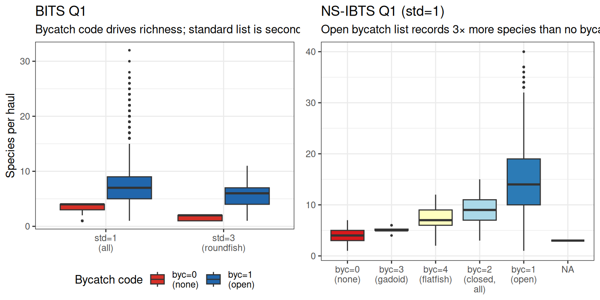
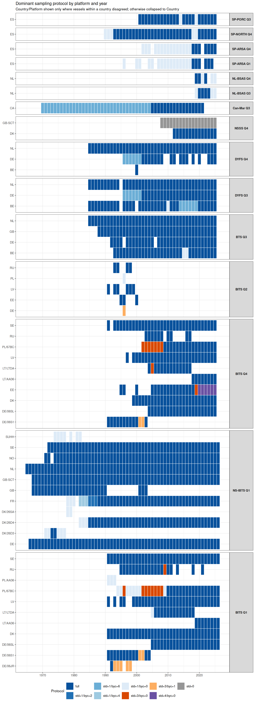
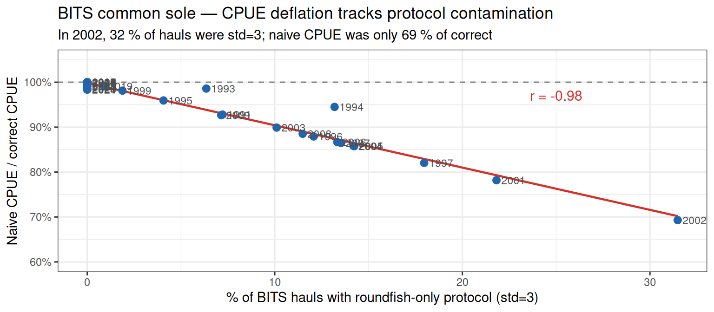

library(obus)
library(dplyr)
library(ggplot2)
library(Hmisc)
hh <- dr_con("HH")
hl <- dr_con("HL")Sampling protocols in DATRAS: StandardSpeciesCode and BycatchSpeciesCode
1 What are “standard species”?
Each DATRAS bottom-trawl survey defines a survey-specific standard species list in its survey manual. Standard species are the commercially important target species for which vessels are required to collect detailed biological data: individual length, weight, sex, maturity, and ideally age. Age-based DATRAS products (CPUEA, IDX) are only available for standard species. The actual species lists are not stored in DATRAS itself — they live in individual survey manuals. What DATRAS does record, for every haul, is which tier of the standard list was active.
Every haul header (HH) record carries two fields that document what the vessel was required to record:
| Code | Values | Meaning |
|---|---|---|
StandardSpeciesCode |
0 = none, 1 = all standard, 3 = roundfish only, 4 = flatfish only | Which tier of the standard species list was active |
BycatchSpeciesCode |
0 = none, 1 = open-ended all species, 2 = closed all species, 3 = gadoid only, 4 = flatfish only, 6 = national list | Which additional (bycatch) species were required |
These flags control what gets written into the HL table. The formal DATRAS haul-selection rule (NS-IBTS Indices Calculation Procedure, Step II) is:
- For a standard species: use only hauls where that species’ tier was active (
StandardSpeciesCode∋ species). - For a bycatch species: use only hauls where bycatch recording was active (
BycatchSpeciesCode ≠ 0). - If neither code covers the species: all hauls are eligible.
A species absent from HL may simply not have been required by protocol, not absent from the catch. This distinction matters whenever you zero-fill or compute species-level CPUE.
2 Empirical standard species lists
There is no universal DATRAS standard species list. Each survey defines its own, and the actual lists are in survey manuals rather than the database. But we can infer them empirically: a species appearing in HL records from hauls where BycatchSpeciesCode = 0 (no bycatch recording) must be on the standard list — there is no other reason it would be recorded.
The table below shows the species appearing in ≥ 5 % of byc = 0 hauls for each survey with at least 10 such hauls. The percentage is the fraction of restricted hauls in which the species was detected; core targets cluster near 100 %.
| Survey | Standard species (≥ 5 % of byc=0 hauls) |
|---|---|
| NS-IBTS | whiting 85%, Atlantic cod 80%, Atlantic herring 72%, haddock 64%, European sprat 40%, Norway pout 30% |
| BITS | Atlantic cod 88%, European flounder 75%, Atlantic herring 35%, European sprat 31% |
| BTS | common dab 94%, common sole 90%, European plaice 87%, whiting 71%, tub gurnard 66%, dogfish 61%, edible crab 54%, roker 48%, lemon sole 46%, grey gurnard 39% (+ 11 more) |
| DYFS | whiting/plaice/sole 100%, common dab 96%, European flounder 78%, Atlantic horse mackerel 52%, tub gurnard 33%, Atlantic cod 26%, turbot 19% |
| NSSS | lesser sandeel 85% (sole species) |
| NL-BSAS | turbot 99%, brill 90% |
| BTS-GSA17 | common sole 76%, Mediterranean starry ray 31% |
| SP-NORTH | fourspot meagrim 95%, European hake 94%, blue whiting 91%, horse mackerel 74%, conger 73% (+ 45 more) |
| SP-ARSA | European hake 92%, conger 75%, deepwater rose shrimp 73%, horse mackerel 66%, dogfish 64%, musky octopus 63% (+ 24 more) |
| SP-PORC | blue whiting 100%, European hake 98%, blackbelly rosefish 98%, Argentine 95%, angler 92% (+ 50 more) |
Survey design is visible in the species list. NS-IBTS targets six gadoid/pelagic species; BTS and DYFS are flatfish surveys; NSSS was designed specifically for sandeel; NL-BSAS monitors juvenile turbots. The Spanish shelf surveys record 30–55 species because they cover deep, species-rich Atlantic and Mediterranean communities where no single target dominates.
The practical consequence: whether a species outside a survey’s standard list is recorded at all depends entirely on BycatchSpeciesCode. Common sole (Solea solea) is standard in BTS and DYFS but bycatch in NS-IBTS; Norway pout is standard in NS-IBTS but bycatch almost everywhere else.
3 Species richness as a protocol fingerprint
The most direct evidence that these codes matter is species richness: count how many distinct species appear per haul and plot against the protocol flags. No inference needed — the protocol IS the species filter.
spp_per_haul <- hl |>
filter(NumberAtLength > 0) |>
group_by(.id) |>
summarise(n_species = n_distinct(aphia), .groups = "drop")
# Restrict to Q1 (primary quarter for both surveys) across all years
# so seasonal variation doesn't confound the protocol comparison
protocol_richness <- spp_per_haul |>
inner_join(
hh |>
filter(HaulValidity == "V", Quarter == 1,
Survey %in% c("NS-IBTS", "BITS")) |>
select(.id, Survey, Year, Quarter, StandardSpeciesCode, BycatchSpeciesCode),
by = ".id", copy = TRUE
) |>
collect() |>
mutate(
std_label = case_when(
StandardSpeciesCode == "1" ~ "std=1\n(all)",
StandardSpeciesCode == "3" ~ "std=3\n(roundfish)",
TRUE ~ paste0("std=", StandardSpeciesCode)
),
byc_label = case_when(
BycatchSpeciesCode == "0" ~ "byc=0\n(none)",
BycatchSpeciesCode == "1" ~ "byc=1\n(open)",
BycatchSpeciesCode == "2" ~ "byc=2\n(closed,\nall)",
BycatchSpeciesCode == "3" ~ "byc=3\n(gadoid)",
BycatchSpeciesCode == "4" ~ "byc=4\n(flatfish)",
TRUE ~ paste0("byc=", BycatchSpeciesCode)
)
)
# BITS Q1 — colour by BycatchSpeciesCode to expose the confound
# (most std=3 hauls also have byc=0; most std=1 hauls have byc=1)
p1 <- protocol_richness |>
filter(Survey == "BITS",
StandardSpeciesCode %in% c("1", "3"),
BycatchSpeciesCode %in% c("0", "1")) |>
mutate(std_label = factor(std_label, levels = c("std=1\n(all)", "std=3\n(roundfish)")),
byc_label = factor(byc_label, levels = c("byc=0\n(none)", "byc=1\n(open)"))) |>
ggplot(aes(std_label, n_species, fill = byc_label)) +
geom_boxplot(outlier.size = 0.5, position = position_dodge(0.8)) +
scale_fill_manual(values = c("byc=0\n(none)" = "#d73027", "byc=1\n(open)" = "#2166ac"),
name = "Bycatch code") +
labs(x = NULL, y = "Species per haul",
title = "BITS Q1",
subtitle = "Bycatch code drives richness; standard list is secondary") +
theme_bw() +
theme(legend.position = "bottom")
# NS-IBTS Q1 — BycatchSpeciesCode effect across its full range (std=1 throughout)
p2 <- protocol_richness |>
filter(Survey == "NS-IBTS", StandardSpeciesCode == "1") |>
mutate(byc_label = factor(byc_label,
levels = c("byc=0\n(none)", "byc=3\n(gadoid)", "byc=4\n(flatfish)",
"byc=2\n(closed,\nall)", "byc=1\n(open)"))) |>
ggplot(aes(byc_label, n_species, fill = byc_label)) +
geom_boxplot(outlier.size = 0.5, show.legend = FALSE) +
scale_fill_brewer(palette = "RdYlBu", direction = 1) +
labs(x = NULL, y = NULL,
title = "NS-IBTS Q1 (std=1)",
subtitle = "Open bycatch list records 3× more species than no bycatch list") +
theme_bw()
gridExtra::grid.arrange(p1, p2, ncol = 2)
The bycatch recording code is the dominant driver. In BITS (Q1), the grouped boxplot reveals the confound: almost all std=3 hauls also have no bycatch recording (byc=0, red), while std=1 hauls predominantly have open bycatch recording (byc=1, blue). Within each bycatch code, the standard species list makes little additional difference. In NS-IBTS (Q1), where the standard code is uniformly 1, open bycatch recording (byc=1) yields a median of roughly 14 species per haul; restricting to gadoids drops it to ~5; no bycatch recording to ~4. The NS-IBTS variation is confined to the pre-1990 era, when Denmark, France, and the Soviet Union had not yet adopted the open bycatch protocol. These are not ecological signals — they are recording artefacts.
4 Where does the variation come from?
Protocol variation is almost entirely a country × era effect: each participating nation sets its own sampling protocol, and protocols change as surveys harmonise over time. Within a country, the Platform (research vessel) can introduce a secondary split — different vessels operated by different institutions may follow different national protocols, so a survey leg can contain hauls from two vessels with incompatible recording schemes.
# Build per-haul protocol labels for all valid hauls
proto_all <- hh |>
filter(HaulValidity == "V") |>
select(Survey, Quarter, Country, Platform, Year,
StandardSpeciesCode, BycatchSpeciesCode) |>
collect() |>
mutate(
sq_label = paste0(Survey, " Q", Quarter),
protocol = case_when(
StandardSpeciesCode == "1" & BycatchSpeciesCode == "1" ~ "full",
StandardSpeciesCode == "1" & BycatchSpeciesCode == "0" ~ "std=1/byc=0",
StandardSpeciesCode == "3" & BycatchSpeciesCode == "0" ~ "std=3/byc=0",
StandardSpeciesCode == "3" & BycatchSpeciesCode == "1" ~ "std=3/byc=1",
StandardSpeciesCode == "4" & BycatchSpeciesCode == "0" ~ "std=4/byc=0",
StandardSpeciesCode == "0" ~ "std=0",
TRUE ~ paste0("std=", StandardSpeciesCode, "/byc=", BycatchSpeciesCode)
)
)
# Survey-quarters with more than one protocol
sq_vary <- proto_all |>
group_by(sq_label) |>
summarise(n_proto = n_distinct(protocol), .groups = "drop") |>
filter(n_proto > 1) |>
pull(sq_label)
# Countries where ANY year has within-country platform protocol disagreement
# → those expand to Country/Platform rows; others collapse to Country
mixed_ctry <- proto_all |>
filter(sq_label %in% sq_vary) |>
group_by(sq_label, Country, Year) |>
summarise(n_proto = n_distinct(protocol), .groups = "drop") |>
group_by(sq_label, Country) |>
summarise(ever_mixed = any(n_proto > 1), .groups = "drop")
plat_tile <- proto_all |>
filter(sq_label %in% sq_vary) |>
left_join(mixed_ctry, by = c("sq_label", "Country")) |>
mutate(y_label = if_else(coalesce(ever_mixed, FALSE),
paste0(Country, "/", Platform),
Country)) |>
group_by(sq_label, y_label, Year) |>
summarise(
dominant = { t <- table(protocol); names(t)[which.max(t)] },
.groups = "drop"
)
proto_colours <- c(
# std=1 (all standard species) — Blues, dark→pale = more→less bycatch coverage
"full" = "#08519c", # std=1 + byc=1 open (most complete)
"std=1/byc=2" = "#2171b5", # std=1 + byc=2 closed-list
"std=1/byc=6" = "#6baed6", # std=1 + byc=6 national list
"std=1/byc=4" = "#9ecae1", # std=1 + byc=4 flatfish only
"std=1/byc=3" = "#c6dbef", # std=1 + byc=3 gadoid only
"std=1/byc=5" = "#c6dbef", # std=1 + byc=5 (1 haul, same shade as byc=3)
"std=1/byc=0" = "#deebf7", # std=1 + byc=0 none (palest)
# std=3 (roundfish only) — Oranges, dark→light = less→more bycatch coverage
"std=3/byc=0" = "#d94801", # roundfish + no bycatch (most restrictive)
"std=3/byc=1" = "#fdae61", # roundfish + open bycatch
# std=4 (flatfish only) — Purples
"std=4/byc=0" = "#6a51a3", # flatfish + no bycatch
"std=4/byc=1" = "#9e9ac8", # flatfish + open bycatch (rare)
# no standard list at all
"std=0" = "#969696"
)
# Order survey-quarters: major multi-country surveys first
sq_order <- plat_tile |>
group_by(sq_label) |>
summarise(n_y = n_distinct(y_label), .groups = "drop") |>
arrange(desc(n_y)) |>
pull(sq_label)
plat_tile <- plat_tile |>
mutate(
sq_label = factor(sq_label, levels = rev(sq_order)),
dominant = factor(dominant, levels = names(proto_colours))
)
# facet_grid with space = "free_y" gives each panel height proportional
# to its number of y-axis values — no extra packages required
ggplot(plat_tile, aes(Year, y_label, fill = dominant)) +
geom_tile(colour = "white", linewidth = 0.25) +
scale_fill_manual(name = "Protocol", values = proto_colours,
na.value = "grey90", drop = TRUE) +
scale_x_continuous(breaks = scales::breaks_pretty(n = 5)) +
facet_grid(sq_label ~ ., scales = "free_y", space = "free_y") +
labs(x = NULL, y = NULL,
title = "Dominant sampling protocol by platform and year",
subtitle = paste0("Country/Platform shown only where vessels within a country disagreed;",
" otherwise collapsed to Country")) +
theme_bw(base_size = 8) +
theme(
legend.position = "bottom",
legend.text = element_text(size = 7),
strip.text.y = element_text(face = "bold", size = 7, angle = 0),
axis.text.y = element_text(size = 7),
axis.text.x = element_text(size = 7),
panel.spacing = unit(0.3, "lines")
)
Several patterns stand out:
- Poland (PL) in BITS ran without bycatch recording until 2009, alternating between full (std=1) and roundfish-only (std=3) standard lists throughout that period. Two vessels operated simultaneously with different protocols in some years (PL/AA36 vs PL/67BC).
- Russia (RU) joined BITS with std=3+byc=0 in 2009, then switched to full protocol.
- Germany (DE) in BITS: vessel DE/06JR ran std=3 from 1993–1998 while DE/06SL ran full protocol in the same years; DE/06S1 also used std=3 in 2001–2002 before switching. Different vessels from the same country thus operated under different protocols within the same survey year.
- NS-IBTS Q1 variation is confined to the 1970s–1980s, when Denmark (DK/…), France (FR/…), and the Soviet Union (SUHH) had not yet adopted the open bycatch protocol.
- Can-Mar Q3 uses byc=6 — a Canadian national bycatch code outside the standard DATRAS classification.
- NSSS Q4 has GB-SCT operating with std=0/byc=0 (no standard or bycatch list), meaning the Scottish component of this survey contributes no species information to the standard HL record.
- From ~2010 onward BITS converges to full protocol across all participating countries.
5 Common sole in BITS: a bycatch species with a paper trail
Under StandardSpeciesCode = 3 (roundfish only), common sole (Solea solea) is not required to be recorded. Its absence from HL then means not recorded, not absent from the catch. This creates a direct, quantifiable CPUE bias whenever roundfish-only hauls are mixed with full-protocol hauls in the same index.
# CPUE for common sole from BITS via standardized HL
hl_bits <- dr_HL_standardised(
hh |> filter(Survey == "BITS", HaulValidity == "V"),
hl |> filter(Survey == "BITS")
) |> collect()
sole_haul <- hl_bits |>
filter(type == "haul", species == "common sole") |>
select(.id, Year, n_hour)
bits_hauls <- hh |>
filter(Survey == "BITS", HaulValidity == "V",
StandardSpeciesCode %in% c("1", "3")) |>
select(.id, Year, StandardSpeciesCode) |>
collect()bits_all_hauls <- hh |>
filter(Survey == "BITS", HaulValidity == "V") |>
select(.id, Year) |>
collect()
sole_cpue_naive <- bits_all_hauls |>
left_join(sole_haul |> select(.id, Year, n_hour), by = c(".id", "Year")) |>
mutate(n_hour = coalesce(n_hour, 0))
sole_cpue_correct <- bits_hauls |>
filter(StandardSpeciesCode == "1") |>
left_join(sole_haul |> select(.id, Year, n_hour), by = c(".id", "Year")) |>
mutate(n_hour = coalesce(n_hour, 0))
pct_std3 <- bits_all_hauls |>
left_join(
hh |> filter(Survey == "BITS", HaulValidity == "V") |>
select(.id, StandardSpeciesCode) |> collect(),
by = ".id"
) |>
group_by(Year) |>
summarise(pct_std3 = mean(as.integer(StandardSpeciesCode == "3")) * 100, .groups = "drop")
ratio_df <- left_join(
sole_cpue_naive |> group_by(Year) |> summarise(m_naive = mean(n_hour), .groups = "drop"),
sole_cpue_correct |> group_by(Year) |> summarise(m_correct = mean(n_hour), .groups = "drop"),
by = "Year"
) |>
mutate(ratio = m_naive / m_correct) |>
left_join(pct_std3, by = "Year") |>
filter(!is.na(ratio), !is.na(pct_std3))
ratio_df |>
ggplot(aes(pct_std3, ratio)) +
geom_hline(yintercept = 1, linetype = "dashed", colour = "grey50") +
geom_smooth(method = "lm", se = FALSE, colour = "#d73027", linewidth = 0.8) +
geom_point(size = 2.5, colour = "#2166ac") +
geom_text(aes(label = Year), hjust = -0.2, size = 3, colour = "grey30") +
annotate("text", x = 25, y = 0.97,
label = sprintf("r = %.2f", cor(ratio_df$pct_std3, ratio_df$ratio)),
colour = "#d73027", size = 4) +
scale_y_continuous(labels = scales::percent, limits = c(0.6, 1.05)) +
labs(x = "% of BITS hauls with roundfish-only protocol (std=3)",
y = "Naive CPUE / correct CPUE",
title = "BITS common sole — CPUE deflation tracks protocol contamination",
subtitle = "In 2002, 32 % of hauls were std=3; naive CPUE was only 69 % of correct") +
theme_bw()
The deflation is near-mechanical (r = −0.99): each percentage point of roundfish-only hauls costs roughly one percentage point of apparent sole CPUE. In 2002, 32 % of BITS hauls used the roundfish-only protocol; the naive index underestimated sole abundance by 31 %.
6 Filtering in practice
Before zero-filling or computing species-level CPUE, exclude hauls where recording was incomplete. The protocol flags are available in both HH and in any downstream product that carries them (e.g. dr_HL_standardised() from the obus package):
# Protocol flags live in HH — filter there before calling dr_HL_standardised()
complete_hh <- hh |>
filter(StandardSpeciesCode == "1", # full standard list
BycatchSpeciesCode != "0") # some bycatch recording
# Pass filtered HH into dr_HL_standardised() so only protocol-complete hauls
# are included; join back to HH on .id if you need the flags downstream
hl_std <- dr_HL_standardised(complete_hh, hl)Note that filtering to StandardSpeciesCode == "1" alone is not sufficient for bycatch species: a haul with std=1 but byc=0 records all standard species but nothing outside that list. For flatfish like common sole, which appear on the standard list in some surveys but are bycatch in others, checking both codes is essential.